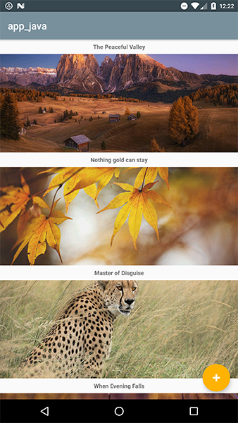
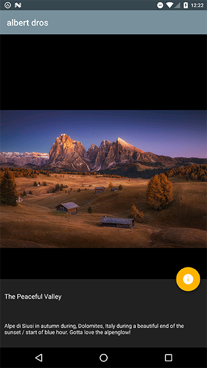
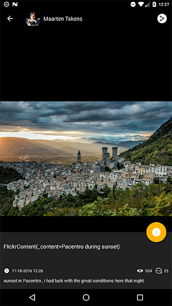
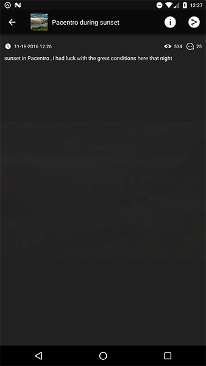
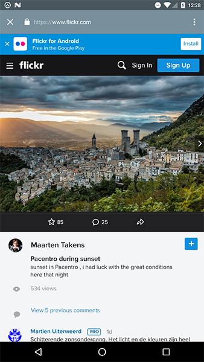
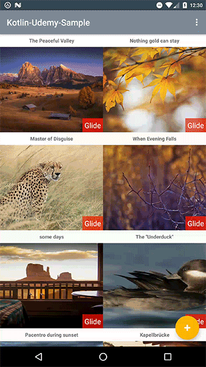
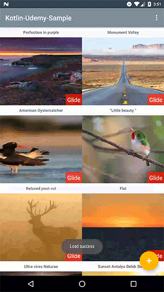
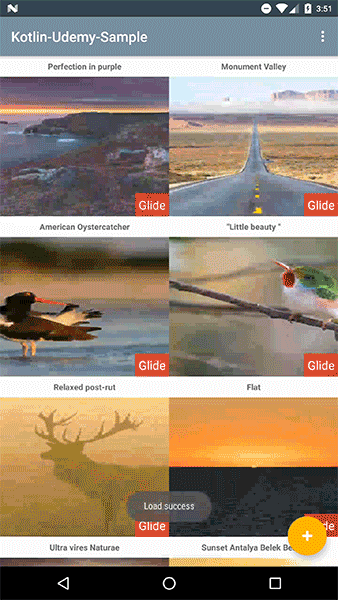
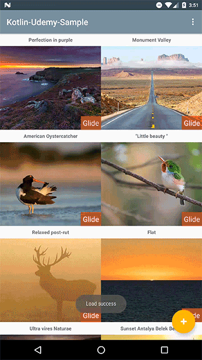
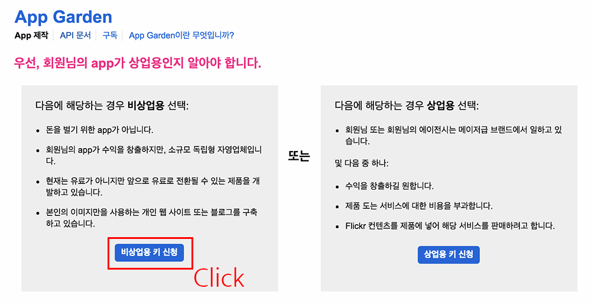

Udemy에서 진행하는 Kotlin 샘플 자료

Udemy 코틀린 안드로이드 시작하기! 강좌의 샘플 자료입니다.
강의 듣기
강의 자료
-
01. Kotlin base init
-
Part 4: 코틀린으로 Activity/Fragment/Util 클래스에 대해서 다룹니다.
-
-
02. Kotlin Null Safety
-
Part 5/Part 6: 코틀린의 안전한 null 처리에 대해서 정리한 자료입니다.
-
-
03. Kotlin class
-
Part 7/Part 8: 코틀린 Class에 대하여 일부 일부 정리하였습니다.
-
-
04. MVC
-
Part 9: Android MVC 코드로 작성한 예제입니다. RecyclerView를 통한 리스트 뷰로 정리하였습니다.
-
-
05. MVP
-
Part 10: Android MVC 코드를 MVP로 변경한 예제입니다.
-
-
06. MVP - Model
-
Part 11: Android MVP에 Model을 추가로 분환할 예제입니다.
-
-
07. RecyclerView
-
Part 12: RecyclerView를 소개합니다.
-
-
08. Retrofit Intro
-
Part 13: Retrofit 소개
-
-
09. Retrofit과 RecyclerView 연결하기
-
Part 14: Retrofit과 RecyclerView 연결하기
-
-
10. Image Load Library Sample
-
Part 15: Image Load Library을 설명하고, AsyncTask, Thread, Glide을 다룬다.
-
-
11. 추가 페이지 제작
-
Part 16/Part 17: 새로운 페이지를 생성하고, Parcelable/BottomSheet을 사용한 예제를 살펴본다.
-
-
12. Android UI Test
-
Part 18/Part 19: Android UI Test에 포함된 자료입니다
-
-
13. Android Presenter Test
-
Part 20: Mockito을 이용하여 Presenter을 테스트한다
-
-
14. Android Renderscript
-
Part 21: Android Renderscript - 아이템 롱클릭시 Blur 처리 예제
-
Preview Java
| Java Sample | |
|---|---|
|  |  |
Preview Kotlin
| Kotlin Sample | |
|---|---|
 |
 |
|  |  |
Kotlin blur sample

Kotlin bottom sheet

UI Test
- RecyclerView item click test

- Test RecyclerView and Detail page

- Menu test

UI Test References
Presenter Test References
이번 장에서 사용한 API
- Glide
- Retrofit 2.0
- OkHttp
- OkHttp Logging Interceptor
-
Thdev Android Base
- 제가 작성한 Android Base(Kotlin 기반)의 코드를 사용하였습니다.(MVP 패턴으로 작성)
개발 버전에 대한 정보
- buildToolsVersion = 24.0.3
- compile sdk version = 24
- Target sdk version = 24
- Min sdk version = 16
- Android studio = 2.2.2
사용한 라이브러리 현황
- Kotlin library
- Kotlin version = 1.0.5
-
Android support library
- support libraryVersion = 24.2.1
API Key
- Create Flickr api key.
- Add a flickr api key
local.properties.- flickrApiKey="Flickr api key"
Load 실패가 발생할 경우

위와 같은 화면을 확인하였다면 다음의 순서대로 따라주세요.
-
API 생성 페이지로 이동합니다.
- 다음의 페이지에서 01.
API 키 요청을 눌러주세요.
-
비상업용 키 신청을 눌러주세요.  - App의 이름과 설명을 간단하게 작성해주세요.

- App 키가 발급되었습니다.

- 발급받은 APP 키를
local.properties에 아래와 같이 추가하세요.flickrApiKey="발급 받은 키"
- 다음의 페이지에서 01.
License
Copyright 2016 Tae-hwan
Licensed under the Apache License, Version 2.0 (the "License");
you may not use this file except in compliance with the License.
You may obtain a copy of the License at
http://www.apache.org/licenses/LICENSE-2.0
Unless required by applicable law or agreed to in writing, software
distributed under the License is distributed on an "AS IS" BASIS,
WITHOUT WARRANTIES OR CONDITIONS OF ANY KIND, either express or implied.
See the License for the specific language governing permissions and
limitations under the License.